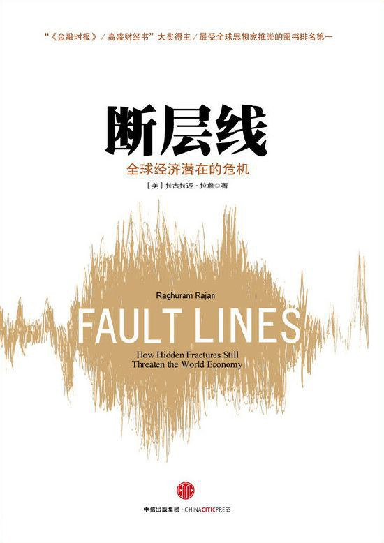

荐书|断层线：全球经济潜在的危机
{kind=link}
英文原版 《Fault Lines: How Hidden Fracturs Still Threaten the World Economy》，普林斯顿大学出版社。
{kind=link}
中文版 《断层线：全球经济潜在的危机》，中信出版社。
关于作者：
拉古拉姆·古米塔·拉詹（Raghuram Govinda Rajan，1963年2月3日—）是一位印度经济学家。他曾是印度财政部首席经济顾问，2003年至2006年间，担任国际货币基金组织（IMF）首席经济学家。 在此之前，他是美国芝加哥大学布斯商学院财政学教授。2013年9月4日，担任印度储备银行第23任总裁。2016年9月4日，因与莫迪政府意见不合，不获延聘。
《断层线》是印度经济学家拉古拉姆·拉詹在2010年出版的一本书，该书探讨了2008年金融危机的根本原因以及世界经济中存在的结构性弱点。该书在2010年荣获《金融时报》和麦肯锡年度最佳商业图书奖。
拉詹是最早一批引起人们关注即将到来的金融危机可能性的经济学家之一。 每年由堪萨斯城联邦储备银行在怀俄明州杰克逊霍尔组织的杰克逊霍尔会议，是世界上最悠久的中央银行会议之一。 它汇集了来自公共和私营部门的参与者，讨论银行业的长期政策问题。2005年的会议是联邦储备委员会主席艾伦·格林斯潘的最后一次，主题是格林斯潘时代的遗产。 拉詹提交了一篇题为”金融发展是否使世界风险更大？”的论文，该论文认为，由于激励机制的扭曲，导致银行家承担更复杂的风险形式，银行在过去十年中对风险的暴露度增加。 尽管拉詹当时受到了广泛的批评，但2008年金融市场的最终崩溃使他的观点被视为具有先见之明。
拉詹对2008年金融危机根源的分析集中在三个基本压力点上：美国日益扩大的收入不平等、由后发国家历史轨迹引起的全球经济中的贸易不平衡，以及美国和英国所代表的基于交易的金融体系与中国和日本所代表的基于关系的金融体系之间的冲突。
美国收入不平等
拉詹在论述收入不平等加剧的论点时，特别指出了美国普通民众工资差距的扩大。工资是美国收入最重要的组成部分。 1975年到2005年的三十年间，位于90百分位的人（即收入超过90%人口的人）的工资比位于10百分位的人的工资增长了大约65%。多种因素，比如普遍的放松管制和随之而来的竞争加剧、税率变化、工会组织的减少以及移民的增加，都在加剧收入不平等。然而，最重要的原因是熟练工人供需之间的差距，这主要是由于教育的不足造成的。虽然政治家们理解这一点，但他们意识到在短期内提高教育质量将是困难的。不断增长的不平等也导致了政治体制内部更大的两极分化，减少了跨党派政治家在税收和再分配问题上达成共识的可能性。 因此，后来的政府转而放宽信贷获取，特别是住房信贷的形式。 政治压力要求扩大住房信贷和住房拥有权，这扭曲了金融部门的贷款行为，政府支持的机构如房利美和房地美以及银行都将资金投向低收入住房。随着这些住房机构大量购买次级抵押贷款支持的证券，这为经纪人在不调查借款人信用状况的情况下发放贷款创造了反向激励。 最初这些问题被房价上涨和低违约率所掩盖。随着房价在1999年到2007年间不断上涨，家庭利用现有房屋净值进行借款。最终，当房价停止上涨时，大量借款人被迫违约。这导致了次级市场的崩溃，进而引发了更广泛的金融危机。 拉詹的分析指出了收入不平等、教育不足、政治分化和信贷宽松等多个因素如何相互作用，最终导致了2008年的金融危机。他强调了教育体系在解决收入不平等问题上的重要性，以及政治决策者在制定和执行有效政策方面面临的挑战。 同时，他揭示了房地产市场和金融信贷政策如何与更广泛的经济问题相互关联。
全球贸易不平衡
拉詹在书中提到，二战后独立的后发经济体通常采取了出口导向型的增长政策。这些国家通过国家控制的金融系统将国民储蓄导向少数受青睐的企业。政府通过设置高关税和进口限制等进入壁垒来保护国内市场不受外国进口商品的影响。同时，他们还向以出口为导向的国内企业提供激励措施，并通过税收减免和补贴来支持这些企业的发展。 由于家庭需求低迷、历史性政府政策和根深蒂固的国内利益，传统的出口国强烈依赖出口，并依赖国际需求来实现增长。这些国家在全球商品市场上产生的盈余被发展中国家吸收。在此过程中，这些发展中国家出现了贸易赤字，其支出由外债提供资金。 20世纪90年代的金融危机之后，这些国家寻求产生贸易顺差，而不仅仅是以出口为导向。这使它们也能够建立外汇储备。为了投资这些储备，出口国需要一个支出超过国内生产的国家，以及一个既能吸引资金流入又能确保这些投资安全的强大的金融体系。这些储备的大部分最终投资于美国。 这种政策转变反映了后发经济体在全球经济中的战略调整，它们通过积累外汇储备来增强自身的经济安全和抵御外部冲击的能力。同时，这也表明了全球经济相互依存性的增加，因为这些国家的投资决策与全球最大经济体的金融市场紧密相连。美国的金融市场因其深度和流动性，成为这些外汇储备的主要投资目的地，这也为美国提供了低成本的融资渠道，但同时也增加了全球金融体系的相互依赖性和系统性风险。
金融体系冲突
拉詹在书中讨论了不同金融体系之间的冲突问题。后发经济体的金融体系通常依赖于长期的商业关系，因为公共领域中的财务信息有限。这与发达国家如美国和英国的金融体系有显著的不同，在这些国家，透明度高和合同容易执行导致了基于交易的金融体系的形成。这种不兼容性使得后发经济体从国外借款支持投资和增长的风险极大。 在20世纪90年代的危机之后，这些国家放弃了投资项目和债务驱动的扩张。它们从净进口国变成了商品和资本的净出口国。在网络泡沫破裂后，当工业国公司的投资崩溃时，刺激增长的责任落在了美国身上。 这种体系的冲突和不兼容性导致了全球金融市场上的紧张和风险。后发经济体在经历了90年代的金融危机后，变得更加谨慎，转而采取了增加出口和积累外汇储备的策略。这种转变不仅是对内部经济政策的调整，也是对全球经济环境变化的响应。美国作为全球最大的经济体，在其他工业国投资减少时，承担起了刺激全球增长的角色，这通常通过货币政策和财政政策来实现，例如降低利率和增加政府支出。 然而，这种依赖美国来驱动全球增长的模式也带来了问题，特别是在全球经济失衡和金融市场相互依存性增加的背景下。美国的宽松信贷和房地产市场的泡沫在一定程度上是由全球储蓄的流入推动的，这最终导致了2008年的全球金融危机。因此，拉詹的分析强调了需要全球经济政策的协调和合作，以减少系统性风险并促进可持续的全球增长。
拉詹的《断层线：隐藏的裂缝如何继续威胁世界经济》一书受到了不同评论家和出版物的评价。以下是一些主要的评论摘要：
《金融时报》专栏作家克莱夫·克鲁克（Clive Crook）的评价： - 克鲁克认为拉詹在讨论金融危机的常见叙事时，将这些因素放入了一个更大、更全面的框架中。 - 他形容这本书“清晰易懂，但不轻松；也不鼓舞人心”。
《经济学人》的评价： - 《经济学人》认为这本书值得在当前广泛阅读，因为现在有一种趋势是将一切都归咎于像“全球化”这样的笼统术语。
哈佛商学院历史学家南希·F·科恩（Nancy F. Koehn）在《纽约时报》的评价： - 科恩将这本书描述为“严肃且深思熟虑的”，但也指出拉詹的分析中“缺少了一些东西”，尤其是“人的能动性——有效的领导力、员工参与、公民公共服务的作用，这些公民对于在日益相互依存的世界中发挥作用感到新的焦虑”。
这些评论反映了拉詹作品的复杂性和深度，以及它在学术和专业领域内引起的讨论。尽管有些评论家认为拉詹提供了一个全面的视角来理解全球经济的脆弱性，但也有人认为他的分析可能没有充分考虑到个人行动和领导力在经济危机中的作用。这种多样性的评价表明，尽管《断层线》一书提供了深刻的见解，但它也激发了对全球经济问题更深层次理解的进一步探讨。
保罗·克鲁格曼对拉詹的中心论点提出了反驳，他认为政府通过鼓励银行向低收入借款人放贷是导致危机的原因。克鲁格曼认为，尽管政府并非完全没有责任，但其错误更多是在于疏忽而不是主动作为。[19] 他批评拉詹的观点，声称“很明显，在他的世界观中，民主党人应负主要责任”，并且“拉詹对保守派叙事的背书，甚至没有承认这条叙事存在的问题，给人的感觉是滑头和回避”。
在《纽约书评》上评论这本书时，克鲁格曼写道：
克鲁格曼认为拉詹的观点过于简化了问题的复杂性，并且没有充分考虑到其他因素，如金融监管的失败和金融市场的过度风险承担。
他指出拉詹的分析可能过于强调政府政策的作用，而忽视了金融市场自身的问题，包括金融产品的复杂性和金融创新的风险。
克鲁格曼还可能批评拉詹对民主党的指责过于严厉，而没有平衡地看待不同政治力量在危机中的角色。
克鲁格曼的评论反映了对拉詹分析的批判性看法，强调了需要更全面和细致地理解金融危机的多重原因。尽管克鲁格曼对拉詹的某些观点持保留态度，但他的评论也促进了对金融危机原因的深入讨论和更广泛的视角。
奖项和荣誉
拉詹的《断层线：隐藏的裂缝如何继续威胁世界经济》一书获得了以下奖项和荣誉：
2010年《金融时报》和麦肯锡年度最佳商业图书奖 ：这是商业出版界非常著名的奖项，旨在表彰那些对商业思想和实践有重大贡献的书籍。
2010年PROSE奖经济学类 ：PROSE奖（Professional and Scholarly Excellence）由美国出版商协会（AAP）颁发，表彰专业和学术出版领域的卓越成就。
2011年独立出版人图书奖金融/投资/经济学类金奖 ：这个奖项由独立出版人在线协会（IPA）颁发，以表彰独立出版人在各个领域的杰出图书。
这些奖项不仅证明了《断层线》一书的学术价值和影响力，也反映了拉詹对金融危机深刻见解的认可。通过这些荣誉，拉詹的分析和观点得到了更广泛传播，对政策制定者、学者和公众理解全球经济的复杂性和挑战有着重要的影响。